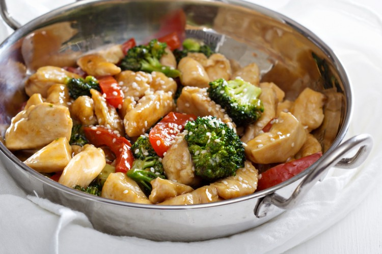
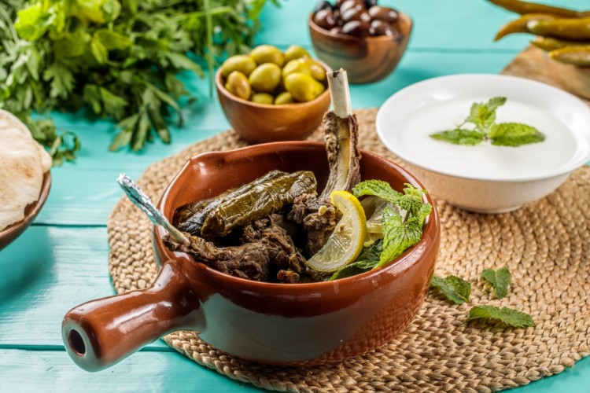
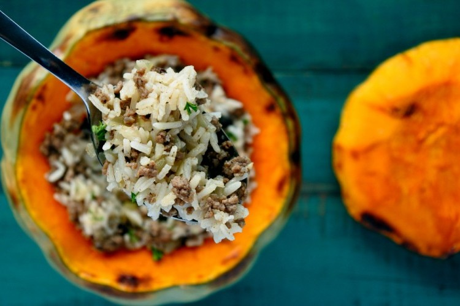

Chicken: 500 grams (cleaned and cut into longitudinal slices)
Starch: 2 tablespoons
Broccoli: half a cup (chopped into small florets)
Onion: 1 piece (chopped)
Colored pepper: 3 grains (chopped cubes)
Green Onion: Oud (chopped)
Salt: half a teaspoon
Black pepper: a quarter of a teaspoon
Chicken Stir-Fry
On the way of the chefs, try preparing chicken dishes based on the origins of Asian cuisine. Try chicken stir-fry quickly, and serve it hot with a plate of white pepper rice.
Ingredients:
For the Sauce:
- Garlic: 2 cloves (mashed)
- Ginger: 1 teaspoon (fresh and grated)
- Orange juice: a third of a cup
- Water: a third of a cup
- Soy sauce: 3 tablespoons
- Sesame oil: one tablespoon
- Starch: a tablespoon
- Brown sugar: 3 tablespoons
- Vegetable oil: 2 tablespoons
Preparation:
- Season the chicken pieces with salt and pepper, then sprinkle the starch on all sides to cover them.
- Heat a tablespoon of vegetable oil in a wide frying pan over high heat, and stir-fry the chicken for 3 minutes, until brown.
- Lift the chicken out of the skillet.
- Add the remaining oil, stir the onions, colored peppers, and broccoli, over high heat for 5 minutes, then return the chicken to the pan.
- Mix sugar, soy sauce, garlic, ginger, orange juice, water, and sesame oil in a bowl and stir well until the ingredients are combined.
- Add the sauce to the chicken and vegetables, spread the starch spoon, and leave the mixture until it starts to boil for 3 minutes, until the sauce thickens.
- Serve hot with noodles or rice as desired.

Grape Leaves with Meat Chops
Stuffed grape leaves cooked with meat chops is one of the traditional Arabic recipes. It is also nice to serve it on the dinner table. On ordinary days, try the wonderful stuffing method from my lady's kitchen and enjoy a wonderful lunch with your family.
Ingredients:
To prepare the filling:
- Minced meat: 750 gr
- Tomato paste: 4 tablespoons
- Onion: 1 piece (chopped)
- Egyptian rice: 2 cups (washed and drained)
- Garlic: 3 cloves (mashed)
- Black pepper: half a teaspoon
- Seven spices: half a teaspoon
- Salt: one and a half teaspoon
- Mint: 2 tablespoons (chopped)
- Ghee: 4 tablespoons
- Sheep Feathers: 1 kg
- Grape Leaves: 1 kg (canned or fresh)
- Tomatoes: 400 grams (cut into slices)
- Vegetable oil: a quarter cup
Preparation:
- Heat a frying pan and heat the ghee in it, then fry the lamb meat until it turns brown on all sides, and place it at the bottom of the pot.
- To prepare the filling: In a bowl, put rice, minced meat, tomato paste, mint, onions, garlic, salt, black pepper, and seven spices, and mix the ingredients well.
- Place a tablespoon of the filling in the middle of each grape leaf, close the grape leaves over the filling on both sides, then wrap it well to form a roll, and arrange the stuffed grape leaves over the rib meat in the pot.
- Repeat the previous step until the stock runs out.
- Add the tomatoes and vegetable oil to the stuffed grape leaves in the pot, then immerse the pot in water, place a plate on top of the grape leaves to prevent the stuffing from coming out during cooking, and cook over medium heat until tender.
- Flip the ingredients onto a serving plate and serve hot.

Pumpkin Stuffed with Ouzi Rice
From one large squash, prepare special dishes on your trip on family occasions, try the ouzi rice with lamb and minced meat, and serve it on your trip hot with a variety of your guests' favorite salads
Ingredients:
- Minced meat: one kilo
- Pumpkin: 1 grain (large size)
- Lamb meat: half a kilo
- Basmati rice: 3 cups (washed and soaked)
- Hot water: 2 cups
- Peas and carrots: 2 cups
- Butter: a finger
- Onion: 1 piece (chopped)
- Vegetable oil: a quarter cup
- Salt: one teaspoon
- Seven spices: a quarter of a teaspoon
- Cinnamon: a quarter of a teaspoon
- Black pepper: a quarter of a teaspoon
- Hill: a quarter of a teaspoon
- Mixed spices: half a teaspoon
Preparation:
- Wash the squash shell from the outside, then with a knife remove the cover, then use scissors to extract and empty the squash pulp from the seeds, then wipe the inside of the squash from the inside.
- Boil the lamb until tender.
- To prepare the filling: stir the onions with the spices, put the minced meat on them, and stir until tender, then put the peas and carrots and leave them until they are half-cooked.
- Add the washed rice and put an amount of spices, oil, water, salt, and leave it until it is tender.
- Stuff the rice inside the gourd after cleaning it well and wiping it from the inside and outside with butter, then put the pieces of boiled meat on the face.
- Close the pumpkin with its lid, wrap it in tinfoil, and place it in the oven for an hour and a half to two hours on a very quiet fire until it becomes tender, then serve it.